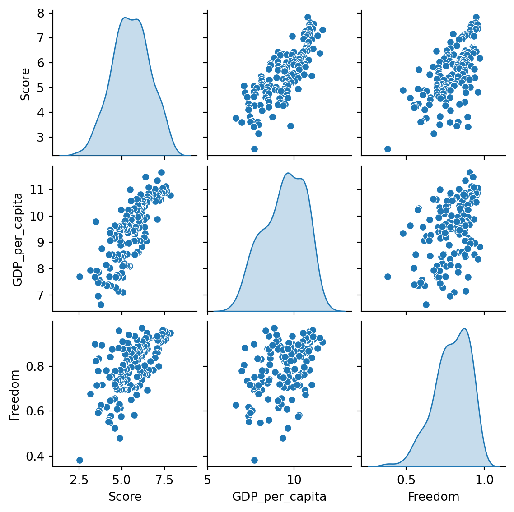
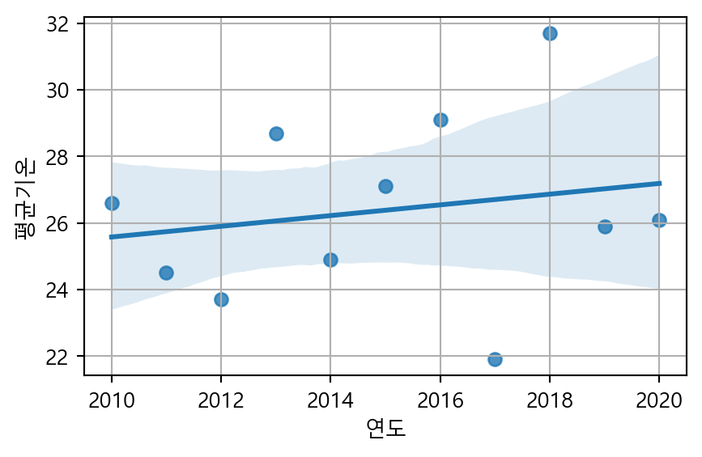
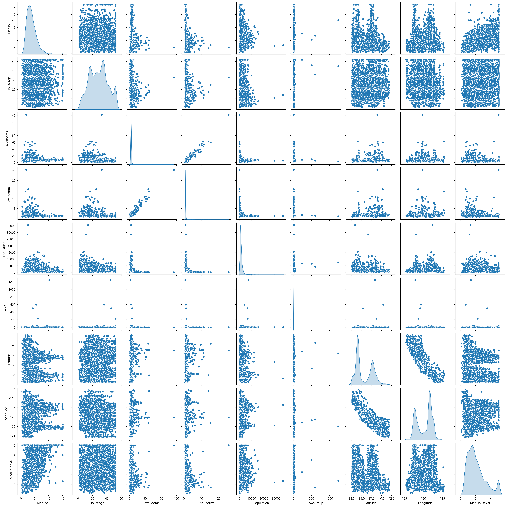

# 라이브러리 불러오기
import numpy as np
import pandas as pd
import matplotlib.pyplot as plt
import seaborn as sns
- 지도학습 : 회귀
8.1. 상관분석
- 상관관계(correlation)
- 두 수치형 변수 간 선형적 관계(linear ralationship)를 의미함
- 산점도나 상관계수를 통해 확인할 수 있음
- 상관계수(correlation coefficient)
- 두 변수 간 선형적 관계의 강도와 방향을 수치로 나타낸 통계량
- 상관계수는 -1에서 1 사이의 값을 가짐
- 절대값이 1에 가까울 수록 강한 상관관계, 0에 가까울수록 약한 상관관계를 가짐
- 양수이면 양의 상관관계, 음수이면 음의 상관관계를 가짐

- [데이터] 캐글에서 제공하는 전세계 행복지수 데이터
# 데이터 불러오기
df2020 = pd.read_csv('./data/2020.csv', index_col=0)
df2021 = pd.read_csv('./data/2021.csv', index_col=0)# 열 정보
df2020.dtypesCountry name object
Happiness score float64
upperwhisker float64
lowerwhisker float64
GDP per capita float64
Social support float64
Healthy life expectancy float64
Freedom to make life choices float64
Generosity float64
Dystopia float64
dtype: object# 2020년 데이터 확인
df2020.head()| Country name | Happiness score | upperwhisker | lowerwhisker | GDP per capita | Social support | Healthy life expectancy | Freedom to make life choices | Generosity | Dystopia | |
|---|---|---|---|---|---|---|---|---|---|---|
| Rank | ||||||||||
| 1 | Finland | 7.8087 | 7.869766 | 7.747634 | 10.639267 | 0.954330 | 71.900825 | 0.949172 | -0.059482 | 2.762835 |
| 2 | Denmark | 7.6456 | 7.711245 | 7.579955 | 10.774001 | 0.955991 | 72.402504 | 0.951444 | 0.066202 | 2.432741 |
| 3 | Switzerland | 7.5599 | 7.628528 | 7.491272 | 10.979933 | 0.942847 | 74.102448 | 0.921337 | 0.105911 | 2.350267 |
| 4 | Iceland | 7.5045 | 7.621347 | 7.387653 | 10.772559 | 0.974670 | 73.000000 | 0.948892 | 0.246944 | 2.460688 |
| 5 | Norway | 7.4880 | 7.556281 | 7.419719 | 11.087804 | 0.952487 | 73.200783 | 0.955750 | 0.134533 | 2.168266 |
# 2021년 데이터 확인
df2021.head()| Country name | Happiness score | upperwhisker | lowerwhisker | GDP per capita | Social support | Healthy life expectancy | Freedom to make life choices | Generosity | Dystopia | |
|---|---|---|---|---|---|---|---|---|---|---|
| Rank | ||||||||||
| 1 | Finland | 7.842 | 7.904 | 7.780 | 10.775 | 0.954 | 72.0 | 0.949 | -0.098 | 3.253 |
| 2 | Denmark | 7.620 | 7.687 | 7.552 | 10.933 | 0.954 | 72.7 | 0.946 | 0.030 | 2.868 |
| 3 | Switzerland | 7.571 | 7.643 | 7.500 | 11.117 | 0.942 | 74.4 | 0.919 | 0.025 | 2.839 |
| 4 | Iceland | 7.554 | 7.670 | 7.438 | 10.878 | 0.983 | 73.0 | 0.955 | 0.160 | 2.967 |
| 5 | Netherlands | 7.464 | 7.518 | 7.410 | 10.932 | 0.942 | 72.4 | 0.913 | 0.175 | 2.798 |
# 데이터 전처리 : 열 삭제
df2020.drop(['upperwhisker', 'lowerwhisker', 'Dystopia'], axis=1, inplace=True)
df2021.drop(['upperwhisker', 'lowerwhisker', 'Dystopia'], axis=1, inplace=True)# 열 이름 변경 : 공백을 .으로 대체
df2020.columns = df2020.columns.str.replace(' ','.')
df2021.columns = df2021.columns.str.replace(' ','.')## 행복 지수에 영향을 주는 요인 파악1 : 행복 점수와 기능의 상관관계
## 한 국가의 행복지수와 경제적(GDP), 법적 상태(Freedom) 간에 강한 관계가 있는가?
# 데이터 전처리
df1 = df2020.copy()
df1.drop(['Social.support', 'Healthy.life.expectancy', 'Generosity'], axis=1, inplace=True)
df1| Country.name | Happiness.score | GDP.per.capita | Freedom.to.make.life.choices | |
|---|---|---|---|---|
| Rank | ||||
| 1 | Finland | 7.8087 | 10.639267 | 0.949172 |
| 2 | Denmark | 7.6456 | 10.774001 | 0.951444 |
| 3 | Switzerland | 7.5599 | 10.979933 | 0.921337 |
| 4 | Iceland | 7.5045 | 10.772559 | 0.948892 |
| 5 | Norway | 7.4880 | 11.087804 | 0.955750 |
| ... | ... | ... | ... | ... |
| 149 | Central African Republic | 3.4759 | 6.625160 | 0.640881 |
| 150 | Rwanda | 3.3123 | 7.600104 | 0.900589 |
| 151 | Zimbabwe | 3.2992 | 7.865712 | 0.711458 |
| 152 | South Sudan | 2.8166 | 7.425360 | 0.451314 |
| 153 | Afghanistan | 2.5669 | 7.462861 | 0.396573 |
153 rows × 4 columns
df1.dtypesCountry.name object
Happiness.score float64
GDP.per.capita float64
Freedom.to.make.life.choices float64
dtype: object# 상관계수 계산 : 2020년 데이터
corr = df1.select_dtypes(include='number').corr()
corr['Happiness.score'].sort_values(ascending=False)Happiness.score 1.000000
GDP.per.capita 0.775374
Freedom.to.make.life.choices 0.590597
Name: Happiness.score, dtype: float64# 히트맵 : 2020년 데이터
plt.figure(figsize=(8, 5))
sns.heatmap(corr, annot=True, cmap='Blues')
plt.show()
# 데이터 전처리
df2 = df2021.copy()
df2.drop(['Social.support', 'Healthy.life.expectancy', 'Generosity'], axis=1, inplace=True)
df2| Country.name | Happiness.score | GDP.per.capita | Freedom.to.make.life.choices | |
|---|---|---|---|---|
| Rank | ||||
| 1 | Finland | 7.842 | 10.775 | 0.949 |
| 2 | Denmark | 7.620 | 10.933 | 0.946 |
| 3 | Switzerland | 7.571 | 11.117 | 0.919 |
| 4 | Iceland | 7.554 | 10.878 | 0.955 |
| 5 | Netherlands | 7.464 | 10.932 | 0.913 |
| ... | ... | ... | ... | ... |
| 145 | Lesotho | 3.512 | 7.926 | 0.715 |
| 146 | Botswana | 3.467 | 9.782 | 0.824 |
| 147 | Rwanda | 3.415 | 7.676 | 0.897 |
| 148 | Zimbabwe | 3.145 | 7.943 | 0.677 |
| 149 | Afghanistan | 2.523 | 7.695 | 0.382 |
149 rows × 4 columns
# 히트맵 : 2021년 데이터
plt.figure(figsize=(8, 5))
sns.heatmap(df2.select_dtypes(include='number').corr(), annot=True, cmap='PuBuGn')
plt.show()
- 분석 결과
- 위에 표시된 2개의 히트맵은 2020년, 2021년 각각에 해당하는 3개 열, 점수, GDP, 자유 상관관 관계 매트릭스를 표시함
- GDP는 행복지수와 어떤 관련이 있는가?
- 히트맵에서 GDP.per.capita와 Score 간의 상관 계수는 총 2년 동안 ~ 0.79로 GDP에 대한 시민의 만족도와 행복도 점수 사이에 강한 양의 관계가 있음을 나타냅니다. GDP.per.capita는 한 국가의 경제 성장을 추적하는 지표입니다. 긍정적인 경제 성장률을 보이는 국가의 사람들은 더 높은 소득과 더 나은 생활 수준으로 이어지기 때문에 더 행복해지는 경향이 있습니다. 따라서 우리는 만족을 보장하기 위해 한 국가의 GDP가 최우선 순위 중 하나가 되어야 한다고 결론지었습니다.
- 행복 점수와 자유의 관계는?
- 자유와 점수 사이의 상관 계수는 2년 전체에서 ~ 0.61로 자유에 대한 인식과 국가의 행복 지수 사이에 중간 정도의 양의 관계를 나타냅니다. 자유에 대한 이러한 인식을 일반화하는 것은 연구에 따르면 세계의 다른 지역에 속한 사람들마다 다르기 때문에 어려운 작업입니다. 그럼에도 불구하고 여전히 국가의 행복지수에 중요한 기여를 합니다.
## 행복 지수에 영향을 주는 요인 파악2 : 행복 점수와 사회적 상태의 상관관계
## 한 국가의 사회적 상태에 대한 인식은 행복 지수에 어떤 영향을 미치는가?
# 데이터 전처리
x1 = df2020[['Generosity', 'Social.support', 'Happiness.score']].copy()
x2 = df2021[['Generosity', 'Social.support', 'Happiness.score']].copy()# 히트맵 : 2020년 데이터
a1 = x1.corr()
plt.figure(figsize=(8, 5))
sns.heatmap(a1, annot=True)
plt.show()
# 히트맵 : 2021년 데이터
a2 = x2.corr()
plt.figure(figsize=(8, 5))
sns.heatmap(a2, annot=True, cmap='GnBu')
plt.show()
- 분석 결과
- 관대함과 사회적 지지는 행복 점수와 어떤 관련이 있는가?
- 관대함과 사회적 지지 상관 계수는 -0.057, -0.11으로 관찰되어 매우 약한 음의 관계를 나타냅니다. 두 메트릭 간에 선형 변화가 많이 관찰되지 않습니다. 관대함은 시민들이 서로에게서 얻는 인식입니다. 관대함과 점수 상관계수는 0.069, -0.018으로 관찰되어 매우 약한 음의 관계를 나타낸다.
- 한편, 사회적 지지와 점수의 상관값은 0.77, 0.76로 강한 양의 관계를 나타낸다. 사회적 지지는 사람들이 가족, 친구, 지인 등과 함께 얼마나 행복한지에 대한 인식입니다. 이들은 일상생활에서 거의 모든 사람들이 대하는 사람들이기 때문에 사회적 지지에 대한 인식이 행복지수를 결정하는 중요한 요소라고 볼 수 있다.
- 관대함과 사회적 지지는 행복 점수와 어떤 관련이 있는가?
# 전체 상관계수 : 2020년 데이터
corr = df2020.select_dtypes(include='number').corr()
plt.figure(figsize=(8, 5))
upp_mat = np.triu(corr)
sns.heatmap(corr, mask=upp_mat,vmin=-1, vmax=1, annot=True, cmap ='RdYlBu_r', linewidths=4)
plt.xticks(rotation=45)
plt.show()# 전체 상관계수 : 2021년 데이터
# 행복도에 가장 큰 영향을 주는 것은 경제적 여유, 사회적 지지, 기대수명(건간), 자유도 순인 것을 알 수 있었다.
corr = df2021.select_dtypes(include='number').corr()
plt.figure(figsize=(8, 5))
upp_mat = np.triu(corr)
sns.heatmap(corr, mask=upp_mat, vmin=-1, vmax=1,annot = True, cmap ='PiYG', linewidths=4)
plt.xticks(rotation=45)
plt.show()
## 상위 50위 국가의 기대수명과 GDP 간 관계
# 데이터 전처리
top50 = df2021.head(50)
top50.head()| Country.name | Happiness.score | GDP.per.capita | Social.support | Healthy.life.expectancy | Freedom.to.make.life.choices | Generosity | |
|---|---|---|---|---|---|---|---|
| Rank | |||||||
| 1 | Finland | 7.842 | 10.775 | 0.954 | 72.0 | 0.949 | -0.098 |
| 2 | Denmark | 7.620 | 10.933 | 0.954 | 72.7 | 0.946 | 0.030 |
| 3 | Switzerland | 7.571 | 11.117 | 0.942 | 74.4 | 0.919 | 0.025 |
| 4 | Iceland | 7.554 | 10.878 | 0.983 | 73.0 | 0.955 | 0.160 |
| 5 | Netherlands | 7.464 | 10.932 | 0.942 | 72.4 | 0.913 | 0.175 |
# 산점도
sns.set_theme(style='dark')
plt.figure(figsize=(25, 7))
ax = sns.scatterplot(data=top50, x='Country.name', y='Healthy.life.expectancy', size='GDP.per.capita',
sizes=(400, 1500), hue='GDP.per.capita')
plt.xticks(rotation=90, fontsize=15, color='midnightblue')
plt.yticks(fontsize=15, color='midnightblue')
plt.xlabel('Country', size=15, color='midnightblue')
plt.ylabel('Healthy Life Expectancy', size=15, color='midnightblue')
plt.show()
# 우리나라는 앞의 3가지가 각각 몇 위일까?
economy = df2020.loc[:,['Country.name','GDP.per.capita']]
economy = economy.groupby(economy['Country.name'])['GDP.per.capita'].mean().sort_values(ascending=False)
economy = economy.rank(method='min',ascending=False)['South Korea']
social = df2020.loc[:,['Country.name','Social.support']]
social = social.groupby(social['Country.name'])['Social.support'].mean().sort_values(ascending=False)
social = social.rank(method='min',ascending=False)['South Korea']
health = df2020.loc[:,['Country.name','Healthy.life.expectancy']]
health = health.groupby(health['Country.name'])['Healthy.life.expectancy'].mean().sort_values(ascending=False)
health = health.rank(method='min',ascending=False)['South Korea']
free = df2020.loc[:,['Country.name','Freedom.to.make.life.choices']]
free= free.groupby(free['Country.name'])['Freedom.to.make.life.choices'].mean().sort_values(ascending=False)
free = free.rank(method='min',ascending=False)['South Korea']
print(f'153개국 중 대한민국의 \nGDP 순위:{economy.astype(int)}위\n사회적 지위 순위:{social.astype(int)}위\n기대수명 순위:{health.astype(int)}위\n자유도 순위:{free.astype(int)}위')153개국 중 대한민국의
GDP 순위:27위
사회적 지위 순위:99위
기대수명 순위:10위
자유도 순위:140위- 분석 결과
- GDP 순위는 양호, 기대수명은 굉장히 높다. 다른나라보다 국가 복지 수준이 높은 덕에 높은 순위를 차지한 것 같다.
- 사회적 지위 순위도 하위 수준이었다.
- 자유도는 거의 최하위 수준이였다. 자유도의 정의는 무엇일까. 정치적으로 문제가 있으면 자유롭게 시위도하고, 표현의 자유, 언론의 자유, 알권리 모두 상위라고 생각하는데 이렇게 최 하위 수준이 나온 이유는 무엇일까. 행복도가 높은 유럽지역처럼 길거리에서 느껴지는 여유로움이 자유도의 큰 부분을 차지하는 것일까?
# 산점도 행렬 : 상관관계 확인
sns.pairplot(df2020)
plt.show()
8.2. 회귀분석
# 한글 깨짐 현상에 대한 해결 방법
import matplotlib.pyplot as plt
import matplotlib as mpl
plt.rc('font', family='Malgun Gothic') # 또는 '맑은 고딕'
mpl.rcParams['axes.unicode_minus'] = False# scikit-learn 설치하기
#!pip install scikit-learnimport matplotlib.pyplot as plt
from sklearn.linear_model import LinearRegression
# 공부시간 : 독립변수, 시험점수 : 종속변수
x = [[2],[4],[6],[8],[10]] # 공부시간
y = [[81],[93],[90],[97],[100]] # 시험점수
# 산점도 그래프
plt.scatter(x,y)
plt.show()
# 학습시키기
model = LinearRegression() # 선형회귀분석 객체 생성하기
# 선형회귀분석 객체를 이용하여 학습시키기
model.fit(x,y)
# 예측하기
result = model.predict([[7]]) # 7시간 학습
print(f'예상점수:{result}')
예상점수:[[94.3]]8.2.1. 단순선형 회귀분석
# 데이터 불러오기
seoul = pd.read_csv('./data/(2010-2020) weather.csv', encoding='cp949')
seoul.head()| 날짜 | 지점 | 평균기온(℃) | 최저기온(℃) | 최고기온(℃) | |
|---|---|---|---|---|---|
| 0 | 2010-01-01 | 108 | -7.6 | -12.7 | -3.6 |
| 1 | 2010-01-02 | 108 | -3.6 | -7.4 | 0.2 |
| 2 | 2010-01-03 | 108 | -6.8 | -10.5 | -3.2 |
| 3 | 2010-01-04 | 108 | -5.9 | -8.0 | -3.4 |
| 4 | 2010-01-05 | 108 | -9.9 | -12.3 | -7.0 |
seoul.info()<class 'pandas.core.frame.DataFrame'>
RangeIndex: 4018 entries, 0 to 4017
Data columns (total 5 columns):
# Column Non-Null Count Dtype
--- ------ -------------- -----
0 날짜 4018 non-null object
1 지점 4018 non-null int64
2 평균기온(℃) 4018 non-null float64
3 최저기온(℃) 4018 non-null float64
4 최고기온(℃) 4017 non-null float64
dtypes: float64(3), int64(1), object(1)
memory usage: 157.1+ KBseoul.describe()| 지점 | 평균기온(℃) | 최저기온(℃) | 최고기온(℃) | |
|---|---|---|---|---|
| count | 4018.0 | 4018.000000 | 4018.000000 | 4017.000000 |
| mean | 108.0 | 12.965207 | 8.991015 | 17.699627 |
| std | 0.0 | 10.803691 | 10.932678 | 10.976719 |
| min | 108.0 | -14.800000 | -18.000000 | -10.700000 |
| 25% | 108.0 | 3.700000 | -0.300000 | 8.200000 |
| 50% | 108.0 | 14.250000 | 9.800000 | 19.600000 |
| 75% | 108.0 | 22.800000 | 18.900000 | 27.400000 |
| max | 108.0 | 33.700000 | 30.300000 | 39.600000 |
# 지점 변수 삭제
seoul.drop('지점', axis=1, inplace=True)
seoul.head()| 날짜 | 평균기온(℃) | 최저기온(℃) | 최고기온(℃) | |
|---|---|---|---|---|
| 0 | 2010-01-01 | -7.6 | -12.7 | -3.6 |
| 1 | 2010-01-02 | -3.6 | -7.4 | 0.2 |
| 2 | 2010-01-03 | -6.8 | -10.5 | -3.2 |
| 3 | 2010-01-04 | -5.9 | -8.0 | -3.4 |
| 4 | 2010-01-05 | -9.9 | -12.3 | -7.0 |
seoul.head()| 날짜 | 평균기온(℃) | 최저기온(℃) | 최고기온(℃) | |
|---|---|---|---|---|
| 0 | 2010-01-01 | -7.6 | -12.7 | -3.6 |
| 1 | 2010-01-02 | -3.6 | -7.4 | 0.2 |
| 2 | 2010-01-03 | -6.8 | -10.5 | -3.2 |
| 3 | 2010-01-04 | -5.9 | -8.0 | -3.4 |
| 4 | 2010-01-05 | -9.9 | -12.3 | -7.0 |
# 열 이름 변경
seoul.columns = ['날짜', '평균기온', '최저기온', '최고기온']
seoul.columnsIndex(['날짜', '평균기온', '최저기온', '최고기온'], dtype='object')seoul.isnull().sum()날짜 0
평균기온 0
최저기온 0
최고기온 1
dtype: int64# 결측값을 포함하는 행 삭제
seoul.dropna(subset=['최고기온'], axis=0, inplace=True)seoul.info()<class 'pandas.core.frame.DataFrame'>
Index: 4017 entries, 0 to 4017
Data columns (total 4 columns):
# Column Non-Null Count Dtype
--- ------ -------------- -----
0 날짜 4017 non-null object
1 평균기온 4017 non-null float64
2 최저기온 4017 non-null float64
3 최고기온 4017 non-null float64
dtypes: float64(3), object(1)
memory usage: 156.9+ KBseoul['날짜'] = pd.to_datetime(seoul['날짜'])# 열 추가
seoul['연도'] = seoul['날짜'].dt.year
seoul['월']=seoul['날짜'].dt.month
seoul['일']=seoul['날짜'].dt.day
seoul.head()| 날짜 | 평균기온 | 최저기온 | 최고기온 | 연도 | 월 | 일 | |
|---|---|---|---|---|---|---|---|
| 0 | 2010-01-01 | -7.6 | -12.7 | -3.6 | 2010 | 1 | 1 |
| 1 | 2010-01-02 | -3.6 | -7.4 | 0.2 | 2010 | 1 | 2 |
| 2 | 2010-01-03 | -6.8 | -10.5 | -3.2 | 2010 | 1 | 3 |
| 3 | 2010-01-04 | -5.9 | -8.0 | -3.4 | 2010 | 1 | 4 |
| 4 | 2010-01-05 | -9.9 | -12.3 | -7.0 | 2010 | 1 | 5 |
# 필터링
conditions = (seoul['날짜'].dt.month==8) & (seoul['날짜'].dt.day==15)
seoul0815 = seoul[conditions]
seoul0815| 날짜 | 평균기온 | 최저기온 | 최고기온 | 연도 | 월 | 일 | |
|---|---|---|---|---|---|---|---|
| 226 | 2010-08-15 | 26.6 | 24.6 | 30.2 | 2010 | 8 | 15 |
| 591 | 2011-08-15 | 24.5 | 22.9 | 26.9 | 2011 | 8 | 15 |
| 957 | 2012-08-15 | 23.7 | 22.4 | 27.1 | 2012 | 8 | 15 |
| 1322 | 2013-08-15 | 28.7 | 25.8 | 32.4 | 2013 | 8 | 15 |
| 1687 | 2014-08-15 | 24.9 | 20.9 | 29.6 | 2014 | 8 | 15 |
| 2052 | 2015-08-15 | 27.1 | 23.1 | 30.8 | 2015 | 8 | 15 |
| 2418 | 2016-08-15 | 29.1 | 25.8 | 34.0 | 2016 | 8 | 15 |
| 2783 | 2017-08-15 | 21.9 | 20.8 | 24.0 | 2017 | 8 | 15 |
| 3148 | 2018-08-15 | 31.7 | 28.3 | 38.0 | 2018 | 8 | 15 |
| 3513 | 2019-08-15 | 25.9 | 23.9 | 28.6 | 2019 | 8 | 15 |
| 3879 | 2020-08-15 | 26.1 | 25.0 | 27.0 | 2020 | 8 | 15 |
seoul0815.info()<class 'pandas.core.frame.DataFrame'>
Index: 11 entries, 226 to 3879
Data columns (total 7 columns):
# Column Non-Null Count Dtype
--- ------ -------------- -----
0 날짜 11 non-null datetime64[ns]
1 평균기온 11 non-null float64
2 최저기온 11 non-null float64
3 최고기온 11 non-null float64
4 연도 11 non-null int32
5 월 11 non-null int32
6 일 11 non-null int32
dtypes: datetime64[ns](1), float64(3), int32(3)
memory usage: 572.0 bytes# 결측값 확인
seoul0815.isnull().sum()날짜 0
평균기온 0
최저기온 0
최고기온 0
연도 0
월 0
일 0
dtype: int64# 연도에 따른 평균기온 변화
fig = plt.figure(figsize=(5, 3))
X = seoul0815[['연도']]
Y = seoul0815['평균기온']
plt.xlabel('연도')
plt.ylabel('평균기온')
plt.scatter(X, Y)
plt.show()
# jointplot 그리기
sns.jointplot(x='연도', y ='평균기온', kind='reg', data=seoul0815)
plt.show()# 단순선형 회귀분석 : 2022년 8월 15일 기온 예측
model = LinearRegression()
X = seoul0815[['연도']]
Y = seoul0815['평균기온']
model.fit(X, Y)
future = pd.DataFrame({'연도': [2022]})
result = model.predict(future)
print(result) [27.50818182]- fit() 메서드는 선형 회귀 모델에 필요한 두 가지 변수를 전달
- 기울기: line_fitter.coef_
- 절편: line_fitter.intercept_
- 이렇게 하면 새로운 X 값을 넣어 y값을 예측할 수 있게 됨
- 싸이킷런 단순 선형회귀에서는 최소제곱법(Ordinary Least Squares)을 활용하기 때문
seoul0815.info()<class 'pandas.core.frame.DataFrame'>
Index: 11 entries, 226 to 3879
Data columns (total 7 columns):
# Column Non-Null Count Dtype
--- ------ -------------- -----
0 날짜 11 non-null datetime64[ns]
1 평균기온 11 non-null float64
2 최저기온 11 non-null float64
3 최고기온 11 non-null float64
4 연도 11 non-null int32
5 월 11 non-null int32
6 일 11 non-null int32
dtypes: datetime64[ns](1), float64(3), int32(3)
memory usage: 572.0 bytes# 8월 15일 평균기온을 산점도, 회귀선 출력하기
x=seoul0815['연도']
y=seoul0815['평균기온']
fp1 = np.polyfit(x, y,2)
f1 = np.poly1d(fp1)
fx = np.linspace(2010, 2020)
plt.figure(figsize=(5, 3))
plt.scatter(x,y)
plt.plot(fx, f1(fx), ls='dashed', lw=3, color='g')
plt.xlabel('연도')
plt.ylabel('평균기온')
plt.show()
fp1
f1
fxarray([2010. , 2010.20408163, 2010.40816327, 2010.6122449 ,
2010.81632653, 2011.02040816, 2011.2244898 , 2011.42857143,
2011.63265306, 2011.83673469, 2012.04081633, 2012.24489796,
2012.44897959, 2012.65306122, 2012.85714286, 2013.06122449,
2013.26530612, 2013.46938776, 2013.67346939, 2013.87755102,
2014.08163265, 2014.28571429, 2014.48979592, 2014.69387755,
2014.89795918, 2015.10204082, 2015.30612245, 2015.51020408,
2015.71428571, 2015.91836735, 2016.12244898, 2016.32653061,
2016.53061224, 2016.73469388, 2016.93877551, 2017.14285714,
2017.34693878, 2017.55102041, 2017.75510204, 2017.95918367,
2018.16326531, 2018.36734694, 2018.57142857, 2018.7755102 ,
2018.97959184, 2019.18367347, 2019.3877551 , 2019.59183673,
2019.79591837, 2020. ])# 시본 모듈로 추세선 넣기
fig = plt.figure(figsize=(5, 3))
sns.regplot(x='연도', y='평균기온', data=seoul0815)
plt.grid()
plt.show()
sns.jointplot(x='연도', y='평균기온', data=seoul0815, kind='reg')
plt.show()
sns.pairplot(seoul0815, kind='reg')
plt.show()
8.2.2. 다중선형 회귀분석
seoul.info()
seoul.head()<class 'pandas.core.frame.DataFrame'>
Index: 4017 entries, 0 to 4017
Data columns (total 7 columns):
# Column Non-Null Count Dtype
--- ------ -------------- -----
0 날짜 4017 non-null datetime64[ns]
1 평균기온 4017 non-null float64
2 최저기온 4017 non-null float64
3 최고기온 4017 non-null float64
4 연도 4017 non-null int32
5 월 4017 non-null int32
6 일 4017 non-null int32
dtypes: datetime64[ns](1), float64(3), int32(3)
memory usage: 204.0 KB| 날짜 | 평균기온 | 최저기온 | 최고기온 | 연도 | 월 | 일 | |
|---|---|---|---|---|---|---|---|
| 0 | 2010-01-01 | -7.6 | -12.7 | -3.6 | 2010 | 1 | 1 |
| 1 | 2010-01-02 | -3.6 | -7.4 | 0.2 | 2010 | 1 | 2 |
| 2 | 2010-01-03 | -6.8 | -10.5 | -3.2 | 2010 | 1 | 3 |
| 3 | 2010-01-04 | -5.9 | -8.0 | -3.4 | 2010 | 1 | 4 |
| 4 | 2010-01-05 | -9.9 | -12.3 | -7.0 | 2010 | 1 | 5 |
from sklearn.linear_model import LinearRegression
model = LinearRegression()
X = seoul0815[['연도','최저기온','최고기온']]
Y = seoul0815['평균기온']
model.fit(X, Y)
new_data = pd.DataFrame({'연도': [2022], '최저기온': [24], '최고기온': [33]})
result = model.predict(new_data)
print(result)[28.08381871]from sklearn.linear_model import LinearRegression
from sklearn.model_selection import train_test_split
import seaborn as sns
plt.figure(figsize=(10,3))
# 데이터 준비 : 속성(변수) 2가지 선택
X = seoul[['연도','최저기온','최고기온']]
Y = seoul['평균기온']
# 먼저 X와 Y변수를 받아 사이킷런의 train_test_split함수를 통해 7:3의 비율로 데이터를 분할한다.
x_train, x_test, y_train, y_test = train_test_split(X,Y, train_size = 0.7, test_size = 0.3)
#다중 선형 회귀 모델 생성
model = LinearRegression()
model.fit(x_train, y_train)
# 모델 테스트하기 : test셋의 일부 데이터를 가지고 모델의 예측결과가 얼마나 좋게 나타나는지 확인
plt.plot(model.predict(x_test[:50]), label='predict')
plt.plot(y_test[:50].values.reshape(-1, 1), label='real temp')
plt.legend()
plt.show()
# 전체 데이터를 이용해 값을 예측하고 실제 값과 비교하여 산점도 그리기
plt.figure(figsize=(10, 3))
y_predict = model.predict(x_test)
plt.scatter(y_test, y_predict, alpha = 0.4)
plt.show()
# score 메소드를 통해 다중선형회귀 모델의 성능을 측정
print(model.score(x_train,y_train))
# 결정계수 R²의 최댓값은 1이며 이 수치가 클수록 실제값과 예측값이 유사함을 의미한다.
# 우리가 모델링한 다중선형회귀모델은 약 0.99의 결정계수를 가지며
# 이는 X변수들이 y변수에 미치는 영향이 99%로 X변수들이 평균기온값 변동의 99%를 설명할 수 있다는 뜻임0.9977654933843609